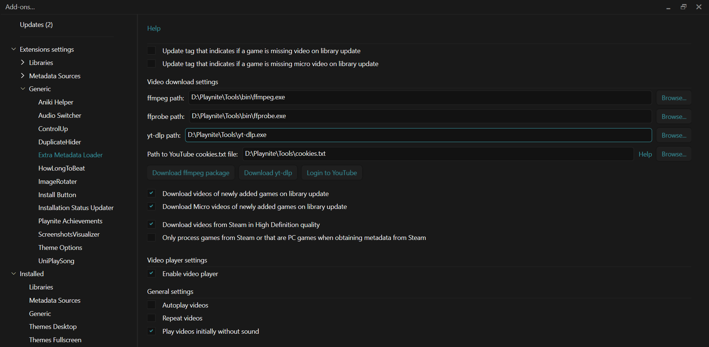
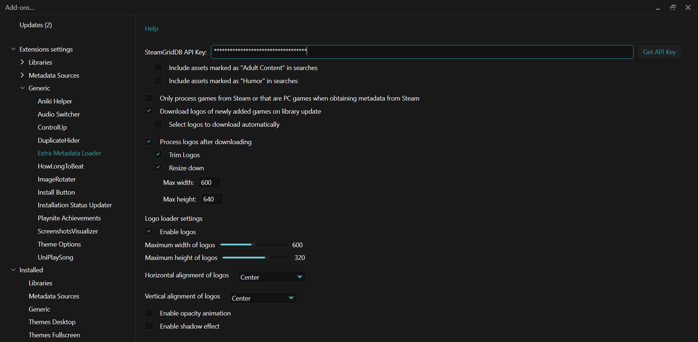

Logos & Trailers
Aniki can use game logos and trailer videos provided by Extra Metadata Loader.
These add-ons are optional, but they are recommended if you want the full visual presentation of Aniki.
What you need
For Fullscreen theme integration, install:
- Extra Metadata Loader
- Extra Metadata Fullscreen Mode Helper
If you selected Extra Metadata during Aniki's First Setup Assistant, both may already be installed.
To check:
- Open Playnite Desktop.
- Press F9.
- Look under Installed → Generic.
- Confirm both add-ons are present.
If one is missing, use Browse → Generic to install it.
Open Extra Metadata Loader settings
- Open Playnite Desktop.
- Press F9.
- Open Extension settings → Generic.
- Select Extra Metadata Loader.
Extra Metadata Loader has separate settings for Videos and Logos.

images/logos-and-trailers-01.pngConfigure the video download tools
If you want Extra Metadata Loader to download trailers, set up the external tools once.
The easiest setup is to keep them in a permanent folder such as:
C:\AnikiTools\
Do not leave them in your Downloads folder, because you will configure Playnite to use these exact file paths.
Download FFmpeg and FFprobe
FFmpeg and FFprobe are included together in the same Windows package.
Use the Windows builds from Gyan.dev:
FFmpeg Windows builds — Gyan.dev
What to download
- Open the link above.
- Scroll to release builds.
- Find latest release.
- Download
ffmpeg-release-essentials.zip.
Choose the ZIP version. It is larger than the .7z archive, but Windows can extract it without requiring another program.
Extract FFmpeg
- Create a permanent folder, for example:
C:\AnikiTools\FFmpeg\
- Open the downloaded
ffmpeg-release-essentials.zip. - Extract its contents into that folder.
- Open the extracted FFmpeg folder.
- Open its
binfolder.
Inside bin you should see:
ffmpeg.exeffprobe.exeffplay.exe
You need ffmpeg.exe and ffprobe.exe.
Example paths will look similar to:
C:\AnikiTools\FFmpeg\ffmpeg-...\bin\ffmpeg.exe
C:\AnikiTools\FFmpeg\ffmpeg-...\bin\ffprobe.exe
Keep the extracted FFmpeg folder. Do not delete it after configuring Playnite.
Download yt-dlp
yt-dlp is used to download videos from sites such as YouTube.
Use the official yt-dlp GitHub release:
Download the latest yt-dlp.exe
- Create a folder:
C:\AnikiTools\yt-dlp\
- Open the link above.
- Save
yt-dlp.exeinside that folder.
Your path should now be:
C:\AnikiTools\yt-dlp\yt-dlp.exe
Do not rename the executable.
Recommended for YouTube: install Deno next to yt-dlp
Modern yt-dlp uses an external JavaScript runtime for full YouTube support.
Deno is the recommended runtime and is enabled automatically by yt-dlp.
The simplest portable Windows setup is to put deno.exe in the same folder as yt-dlp.exe.
Open the official Deno releases page:
Download the latest Deno release
For a normal Intel/AMD 64-bit Windows PC:
- Open the latest Deno release.
- Under Assets, download:
deno-x86_64-pc-windows-msvc.zip
- Extract the ZIP.
- Copy
deno.exeinto:
C:\AnikiTools\yt-dlp\
You should now have:
C:\AnikiTools\yt-dlp\yt-dlp.exe
C:\AnikiTools\yt-dlp\deno.exe
If you use a Windows ARM device, download the ARM64 Deno archive instead.
The official Windows yt-dlp.exe already contains the yt-dlp EJS component. For the normal Aniki setup, adding a current Deno executable is the important extra step for full YouTube support.
Configure the paths in Extra Metadata Loader
Now return to Playnite Desktop.
- Press F9.
- Open Extension settings → Generic → Extra Metadata Loader.
- Open Videos.
- Next to the FFmpeg setting, click Browse and select your
ffmpeg.exe. - Next to the FFprobe setting, click Browse and select your
ffprobe.exe. - Next to the YouTube downloader / yt-dlp setting, click Browse and select your
yt-dlp.exe. - Click Save.
You can reuse these same FFmpeg and FFprobe files later for Aniki Video Center.
You do not need to selectdeno.exeinside Extra Metadata Loader. Keeping it besideyt-dlp.exeallows yt-dlp to find it on Windows.
Recommended logo settings for Aniki ReMake
Open Extra Metadata Loader → Logos.
For the presentation used by Aniki, the recommended logo display limits are:
- Maximum width: 600
- Maximum height: 320
600 × 320 is an Aniki recommendation for the space available in the theme. It is not necessarily Extra Metadata Loader's own default value.Also consider enabling:
Download logos of newly added games on library update
This lets new games receive logos automatically when your library updates.

images/logos-and-trailers-02.pngDownload a logo manually
Use Playnite Desktop.
One game
- Right-click the game.
- Open Extra Metadata → Logos.
- Choose a provider/action such as Steam, SteamGridDB, Google/search or a local file, depending on what your Extra Metadata Loader version offers.
- Choose the logo.
- Wait for it to be saved.
- Return to Fullscreen.
Several games
- Select several games with Ctrl or Shift.
- Right-click the selection.
- Open Extra Metadata → Logos.
- Choose the batch/provider action.
- Wait for the operation to finish.
For very large libraries, smaller batches can be easier to review.
Recommended video settings for Aniki ReMake
Open Extra Metadata Loader → Videos.
Prefer downloaded trailers instead of Steam streaming
For Aniki, it is recommended to disable:
Stream Steam videos on demand
and use downloaded/local trailer files instead.
Why?
Streaming a trailer while moving through a Fullscreen library can introduce short stalls or stutter because the video must be obtained while the selected game is changing.
Downloaded videos are more predictable and usually provide smoother browsing.
This is a recommendation for Aniki's controller-oriented navigation, not a statement that Steam streaming is broken for everyone.
Start trailers muted
If you want trailers to start without audio:
- Open Extra Metadata Loader → Videos.
- Enable Start videos without sound / Play videos initially without sound.
- Save.
You can still control how Aniki itself presents trailers from Theme Customization.
Disable unused video previews
Extra Metadata Loader can display a video preview even while its video player is not actively playing.
If you do not use those previews, or they create unwanted behavior in a theme view:
- Open Extra Metadata Loader → Videos.
- Find the Display video preview when not playing option for the affected view.
- Disable it.
- Save and test again.
The extension can expose separate preview settings for Details, Grid and other views.
Download trailers
Use Playnite Desktop.
One game
- Right-click the game.
- Open the Extra Metadata video actions.
- Choose the video/trailer download action you want.
- Follow the Extra Metadata Loader prompts.
- Wait for the video to download.
Several games
- Select several games.
- Right-click the selection.
- Open the Extra Metadata video actions.
- Choose the batch download action.
- Let the operation complete.
Once the trailer exists locally, Aniki can use it without streaming it on demand.
Enable trailers in Aniki
After you have compatible videos:
- Open Aniki Fullscreen.
- Press Start / Menu.
- Select Settings.
- Select Customization.
- Open Backgrounds and Videos.
You can independently enable:
- Show trailer on main view
- Show trailer on details view
Choose how the trailer appears in Game Details
Still in Backgrounds and Videos:
Full background
Enable Use full background trailer on details view.
The trailer becomes the main Details background.
Smaller video / picture-in-picture
Disable the full-background option.
Aniki uses its smaller trailer presentation instead.
You can also enable trailer playback time if you want it displayed.
A good starting configuration
If you want trailers without making normal library browsing too busy:
- Disable Show trailer on main view.
- Enable Show trailer on details view.
- Disable Stream Steam videos on demand in Extra Metadata Loader.
- Download the trailers you want to keep.
- Choose full-background or smaller Details presentation.
This is only a starting point; you can enable Library trailers later if you prefer them.
Logo performance options
Extra Metadata Loader can add its own visual effects to logos, including:
- opacity animation;
- shadow effect.
These can look good, but they add extra rendering work.
If Fullscreen navigation stutters while logos change:
- Open Extra Metadata Loader → Logos.
- Disable Opacity animation.
- Disable Enable shadow effect.
- Save and test again.
You do not need to disable them if your system is smooth.
A logo does not appear
Check:
- Extra Metadata Loader is installed and Logos are enabled.
- The game actually has a downloaded logo.
- The logo display limits are reasonable.
- The current Aniki view is configured to show the game logo/title.
- Try downloading that game's logo manually.
A trailer does not appear
Check:
- Extra Metadata Loader and the Fullscreen Mode Helper are installed.
- The game actually has a compatible video.
- Aniki's trailer option is enabled for the current view.
- If you disabled Steam streaming, make sure a local trailer was downloaded.
Trailer navigation causes stutter
Start with:
- Disable Stream Steam videos on demand.
- Prefer downloaded videos.
- Disable Library trailers temporarily and test Details-only trailers.
- Check the logo effects described above.
- See Performance & Recommended Settings.
Videos do not work anywhere
If trailers, login videos and other Playnite videos all fail, the problem may be Windows media components rather than Aniki.
This is more common on:
- Windows N editions;
- stripped/custom Windows builds;
- systems where Windows media components were removed.
Check Windows Optional features and make sure the normal media components required by Windows/Playnite are installed.
On Windows N editions, install the Microsoft Media Feature Pack for your Windows version and restart Windows.
If only one Extra Metadata trailer fails while other videos work, troubleshoot that file/provider instead of reinstalling Windows media components.